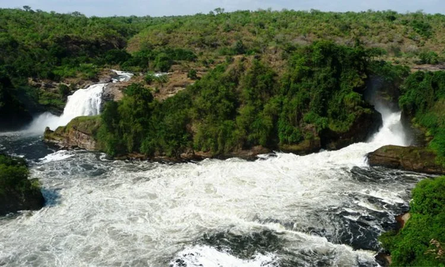
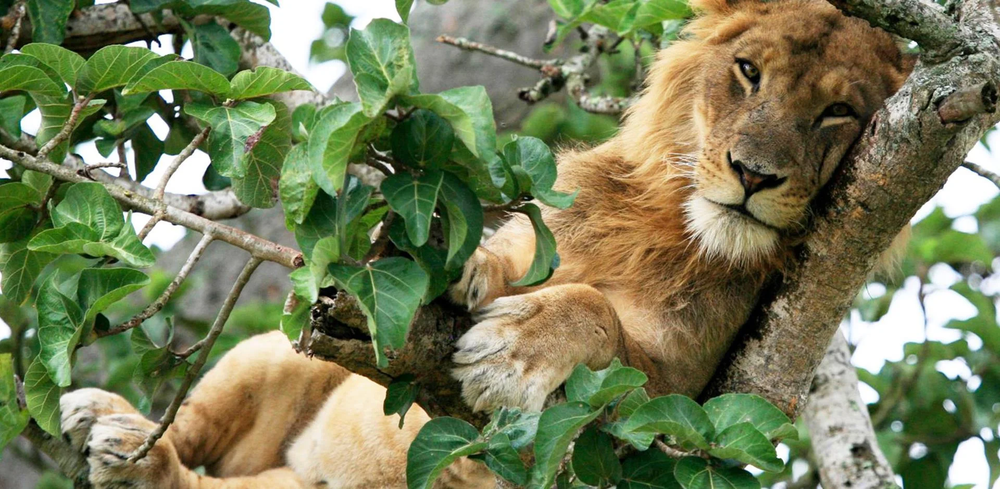
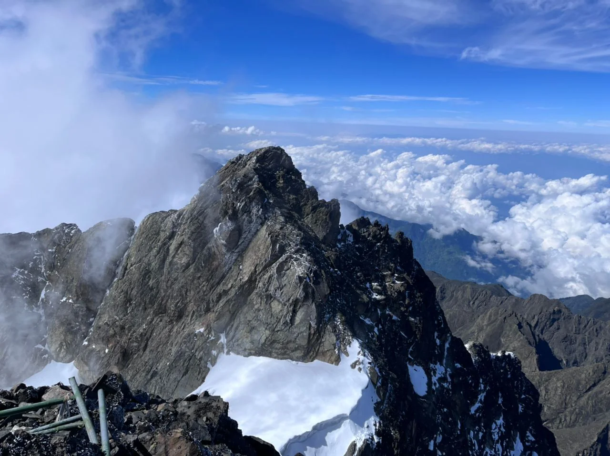
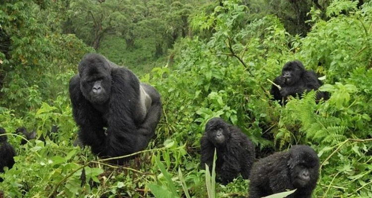
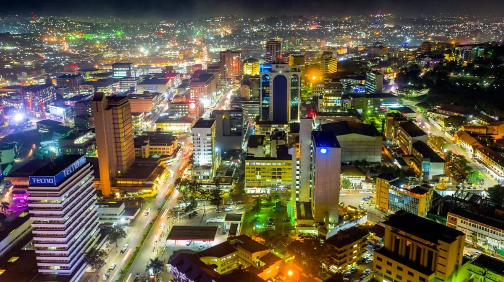

Explore the most breathtaking destinations in the Pearl of Africa.
By Explore Uganda Editorial Team·
1. Bwindi Impenetrable National Park
Bwindi Impenetrable National Park is one of Uganda’s most iconic and extraordinary destinations,
globally recognized for its population of endangered mountain gorillas. Nestled in the southwestern
part of the country, this dense rainforest offers an unmatched sense of adventure and discovery.
Trekking through Bwindi’s thick vegetation is both challenging and rewarding. Guided by experienced
trackers, visitors journey deep into the forest to encounter gorilla families in their natural habitat.
This experience is often described as life-changing, as it allows a rare and intimate connection with
one of humanity’s closest relatives.
Beyond gorillas, Bwindi is a biodiversity hotspot with hundreds of bird species, butterflies,
and plant life. Cultural encounters with the Batwa community also enrich the experience,
making Bwindi a perfect blend of nature and heritage.
2. Murchison Falls National Park

Murchison Falls National Park is Uganda’s largest and oldest conservation area, offering some of the most
dramatic landscapes in East Africa. The highlight of the park is the powerful Murchison Falls, where the Nile
River forces its way through a narrow gorge before plunging into a thunderous cascade.
Visitors can enjoy classic African safari experiences, including game drives that reveal elephants,
lions, giraffes, buffaloes, and antelopes roaming freely across the savannah. The park’s river cruises
provide a unique perspective, bringing visitors close to hippos, crocodiles, and an abundance of birdlife.
The combination of wildlife, scenic beauty, and the mighty Nile makes Murchison Falls a must-visit
destination for anyone exploring Uganda.
3. Queen Elizabeth National Park

Queen Elizabeth National Park is one of Uganda’s most diverse and accessible parks, known for its rich
ecosystems and incredible wildlife. From open savannah to wetlands and crater lakes, the park provides
a wide range of habitats that support a vast variety of species.
The Ishasha sector is particularly famous for its rare tree-climbing lions, a unique behavior that draws
visitors from around the world. Meanwhile, the Kazinga Channel offers unforgettable boat safaris with
large concentrations of hippos, elephants, and birds.
Whether you are interested in wildlife photography, birdwatching, or scenic landscapes, Queen Elizabeth
National Park offers something for every traveler.
4. Lake Bunyonyi
Lake Bunyonyi is often described as the most beautiful lake in Uganda. Surrounded by terraced hills and
dotted with numerous small islands, it offers a peaceful retreat away from the hustle and bustle of city life.
The lake is perfect for relaxation, canoeing, swimming, and cultural experiences. Visitors can explore the
islands, each with its own history and charm, or simply enjoy the breathtaking scenery from a lakeside lodge.
With its cool climate and tranquil atmosphere, Lake Bunyonyi is an ideal destination for those seeking
serenity and natural beauty.
5. Rwenzori Mountains National Park

The Rwenzori Mountains, also known as the “Mountains of the Moon,” offer one of Africa’s most unique
trekking experiences. With snow-capped peaks, glaciers, and lush valleys, the range presents a dramatic
contrast to Uganda’s typical landscapes.
Hiking in the Rwenzori is both challenging and rewarding, attracting adventurers from around the world.
The journey takes visitors through diverse vegetation zones, from tropical forests to alpine meadows.
For those seeking a true adventure, the Rwenzori Mountains provide an unforgettable experience of
exploration and natural wonder.
6. Kibale National Park
Kibale National Park is widely known as the primate capital of the world. It is home to chimpanzees and
several other primate species, making it a top destination for wildlife enthusiasts.
Chimpanzee tracking is the main attraction, allowing visitors to observe these intelligent creatures
in their natural environment. The experience is both educational and thrilling, offering insights into
their behavior and social structures.
The park’s lush forests and rich biodiversity make it a must-visit for anyone interested in primates and nature.
7. Jinja – Source of the Nile
Jinja is Uganda’s adventure capital, located at the source of the Nile River. It is a vibrant town known
for its thrilling outdoor activities and scenic beauty.
Visitors can enjoy white-water rafting, bungee jumping, kayaking, and boat cruises along the Nile.
These activities attract adrenaline seekers from across the globe.
Beyond adventure, Jinja offers a relaxed atmosphere with beautiful river views, making it a perfect
destination for both excitement and leisure.
8. Lake Mburo National Park

Lake Mburo National Park is a compact yet diverse park that offers a unique safari experience.
It is particularly known for its population of zebras and antelopes.
Unlike many other parks, visitors can explore Lake Mburo on foot, by bicycle, or on horseback,
providing a more intimate connection with nature.
The park’s peaceful environment and scenic landscapes make it a great stopover between Kampala
and southwestern Uganda.
9. Ssese Islands
The Ssese Islands, located on Lake Victoria, offer a tropical paradise with sandy beaches,
palm trees, and clear waters. They are perfect for relaxation and escape.
Visitors can enjoy activities such as fishing, swimming, and nature walks, or simply unwind
in a peaceful island setting.
The islands provide a unique contrast to Uganda’s inland attractions, offering a coastal-like
experience within the country.
10. Kampala City

Kampala, the capital city of Uganda, is a vibrant and dynamic destination that blends modern
urban life with rich cultural heritage.
The city offers bustling markets, historical sites, lively nightlife, and diverse cuisine.
It is the perfect place to experience Ugandan culture and hospitality.
As the gateway to the rest of the country, Kampala provides a great starting point for any
Ugandan adventure.
Keep Exploring
Related Uganda Guides
Explore a few more Uganda stories that can help turn curiosity into a fuller, better-shaped trip.